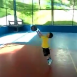

vamo, vamo, vamo…
Posts tagged vídeo
Baaaaarro
67 years
by Alecão
in Ex-sedentário
Com o pé atolado na lama e de celular na mão resolvi fazer uma vídeo reportagem da aventura deste último sábado.
O Claudião vai fazer um post todo especial completando esta vídeo reportagem. Né Claudião???

Mãe, olha eu!
47 years
by Alecão
in Ex-sedentário
Na Meia Maratona Internacional de São Paulo de 2011, teve a estréia de mais uma ex-sedentária. Desta vez foi minha mãe que estreou. Ela já é uma caminhante, que poucos conseguem acompanha-la, por causa da passada rápida sem trotar. E queria participar de uma caminhada em corrida e faltava eu fazer a minha parte.
Imaginando a linha de chegada
27 years
by Alecão
in Ex-sedentário
Sabadão, acordo tarde e vou pra rua, sol estava fraco, bom para treinar. Pensei, quem sabe hoje quebro mais uma meta: A de correr por 6Km sem quebrar o rítimo para caminhada. E saí, com direito a ladeirinha e corri ela. Lá em cima, pensei. Quem sabe? E fui trotando devagar, achando que iria manter aquele rítimo.
Fui até o ponto em que faço bate volta. Até aqui foi uma descida só. Olho pro cronômetro e ele marca 22 minutos. Se a volta não fosse subida, conseguiria terminar em 44, pensei. Mas é o que mata. A volta é uma subida só, que vai aumentando o seu aclíve aos poucos.
Continuei trotando. Passei pelo trecho em que havia “quebrado” 3 dias antes. – Acho que dá!
Mais um pouco, o corpo não respondia. Foi nessa hora que no rádio comecei a escutar a música Firework da Kate Perry. Lembrei da letra, lembrei do clip. Bem, vejam por vocês mesmos:
Nesse momento comecei a sentir uma euforia grande. Lembrei que saí de casa e as crianças ainda estavam dormindo. Mas que ao voltar, eles estariam acordados. Junto com a música rolando, me imaginei cruzando o portão de casa como se fosse um pórtico e em meu pensamento eu gritava. Olívia, Maurício, o papai conseguiu, o papai fez 6 Km sem caminhar. E imaginei a festa que eles fariam e com direito a fogos de artifício.
A música acabou. Mas meu r√≠timo aumentou. Não via a hora de minha mentaliza√ß√£o se realizar. Com toda esta euforia, a subida foi fichinha. E chegando em casa fiz toda a festa que eu imaginei. Foram 48 minutos cravados… Eu consegui! Eu consegui! Eu consegui!

Domingo, foi dia de parque. A Andrea caminhando e as crian√ßas junto. Fiquei correndo em c√≠rculo e o Maur√≠cio correu ao meu lado por pelo menos 2 Km… Olha que ele tem apenas 6 anos. Fiquei impressionado com a disposi√ß√£o dele. E tamb√©m da Ol√≠via (8 anos) que queria colo por cansa√ßo, mas ao avistar o brinquedo, saiu correndo. hehehehe.
Hoje, foi descanço, mas acabei caminhando um pouco para buscar o kit da corrida de amanhã.
Amanhã, serão 10Km. Ainda não me sinto confortável com esta distância, mesmo tendo feito os 15K da São Silvestre. Meu desejo √© quebrar a marca anterior de 1h26min. Thiago me disse que irá fazer um treino aproveitando o percurso e que na segunda volta irá me procurar, espero que ele me encontre, estou precisando deste incentivo. Vamo, vamo, vamo… Alecão 1h20m na cabe√ßa!
Agindo como criança
57 years
by Alecão
in Ex-sedentário

Como relatei no post da São Silvestre, em 2010 eu me redescobri e uma redescoberta foi a de querer me tornar criança novamente. No sentido da felicidade pelas coisas simples. Nós adultos complicamos demais quando o assunto é encontrar a felicidade. Buscamos o álcool (para citar), compras, status, com o objetivo de alcançar a felicidade. E no final das contas é bem complicado. As crianças não, se divertem com uma caixa de papelão. Acho que a corrida me trouxe um pouco disso, a diversão por si só. Veja quantos relatos de corredores se divertindo fazendo treinos sem relógio. Eu particularmente, as vezes esqueço de iniciar, ou parar o cronômetro. É a alegria se materializando apenas por curtir o momento.
No último domingo a tarde, levei meu filho para brincar na quadra do lado de casa, levamos a bola de basquete. A cesta sempre foi alta para o Maurício e as tentativas anteriores sempre foram frustrantes, mas neste domingo, a força dele já era suficiente para a bola entrar na cesta. Catei o celular e vamos filmar:
A alegria dele de ter feito as cestas era o equivalente ao meu de ter terminado a São Silvestre. Continuamos a jogar basquete e alguns meninos apareceram na quadra, “tio posso jogar?”, e deixei, formamos 2 times, 3 crian√ßas (maiores que o Mau√¥) contra eu e o Mau√¥. Depois de 10 minutos, aparece um vizinho meu que falou: “Voc√™ está louco de tentar acompanhar as crian√ßas”. Desprezei o comentário e continuei, depois de uns 30 minutos, comecei a sentir dor no f√≠gado. Hehehehe, pensei comigo, peguei pesado… Mas me diverti muito, correndo e tentando roubar a bola… “Mas tio, voc√™ √© grande, voc√™ não pode fazer isso”, esta frase me fez pensar um pouquinho. Porque adulto não pode se comportar como crian√ßa? E continuei rindo e brincando. Foi muito divertido. Pena que no meu atual estado “kilogram√©trico”, fica dif√≠cil continuar a brincadeira por muito tempo.
Segunda, fiz uma caminhada de quase 5 Km por 60 minutos, voltando do trabalho, com roupa social e mochila das costas.
Ter√ßa, na hora do almo√ßo, aceitei o chamado da Mo√ßa e fui para “rodar” na quadra. As crian√ßas foram junto, e alternei entre trotes e brincadeiras com a bola de basquete e corridas com as crian√ßas. O meu sobrinho Pedro (11 anos) estava junto, perguntei se queria que o inscreve-se na pr√≥xima corrida infantil e ele topou. Olha eu influ√™nciando… hehehehe. Estar com a fam√≠lia foi muito bom, nem percebi que estava rodando (que normalmente considero chato).
Quarta, como diz a Ivana, com tanta água caindo, ficamos de molho! Acabei indo pro shopping comer… hahahaha
Ontem, caminhei voltando do trabalho por 30 minutos e depois a Mo√ßa me chamou para caminhar, avisei, tem uma nuvem preta lá fora, acho que ela não me escutou e continuou a vestir a roupa de caminhada, me troquei tamb√©m e fomos para a rua. Com 10 minutos de caminhada, umas gotas do c√©u come√ßaram a cair, continuamos …”Não vai ser uma chuvinha que vai nos desanimar”… Mas derrepente. O mundo come√ßou a cair sobre nossas cabe√ßas. Era balde d’√°gua sobre a cabe√ßa, era imposs√≠vel continuar e voltamos. Mas a esta altura¬†estávamos¬†longe de casa. Depois vir a saber que a chuva alagou vários pontos do ABC. A Andrea queria se abrigar, mas eu tinha receio de parar e o corpo esfriar, já estávamos completamente molhados. Os pingos duros (como diz a Mo√ßa) doiam a cabe√ßa, enquanto que a água impedia a gente de enchergar a cal√ßada. Foi punk…. E MUITO DIVERTIDO. Abria os bra√ßos e falava: “Manda mais água!”
Me senti como crian√ßa, quando minha mãe deixava brincar na chuva (que era raro, hehehe). A sensa√ß√£o foi muito boa. Quase chegando em casa completamente encharcado. Vimos uns moleques jogando futebol em um gramado “empiscinado”. Comentei com a Mo√ßa: “Olha lá como √© divertido”. Foram apenas 30 minutos de caminhada dentro d’√°gua, mas pareceu uma eternidade. Em casa, torci a roupa, coloquei no varal e corri para um banho quentinho e demorado. Amei tudo isso!
Um ano da primeira prova de Alex e Claudio (comemorando em grande estilo)
287 years
by Alecão
in Ex-sedentário
Este é um post elaborado a quatro mãos (do Alex e do Claudio).

Faz 1 ano em que eu (Alex) aceitei participar da minha primeira corrida, na época a idéia partiu de mim e o Claudio pirou ao escutar a idéia. Naquela corrida corremos lado-a-lado e com certeza sem ele não teria completado a prova.
Desta vez a coisa foi diferente. Claudião se preparou para encarar a maratona de Curitiba e eu quis fazer um Deja-vu correndo novamente a Samsung 10K e desta vez sozinho.
Falando nisso, todas as corridas que eu participei, tive companhia e nessa em particular eu corri sozinho… Portanto, tive que contar muito com a for√ßa de vontade.
Escrevendo esta introdu√ß√£o fiquei imaginando como iria fazer um texto a quatro mãos, sendo que não estamos juntos. Então eu imaginei… Escrevo minha parte e depois o Claudio acrescenta a dele. E como fazer isso? A resposta √© colocando os horários e depois intercalando…

Deus! Escrever agora, emocionado, fica mais complicado.
A data realmente pedia uma comemoração especial. Afinal, um ano da primeira prova oficial depois de nossa resolução de parar de reclamar da má sorte/saúde e literalmente corrermos para o abraço de uma vida feliz!
Partamos então para a parte Parananense da comemoração, porque eu não comemorei sozinho em Curitiba, nosso idolo do Blog, o Thiago, esteve comigo na aventura. E que aventura:
21:45 (Claudio) РSábado 20.11. -Thiago e eu estamos na Rodoviária do Tiete, aguardando o horário de partida do ônibus que nos conduziria até Curitiba.

02:30 (Alex) РAcordei, sem sono, maldita ansiedade, tentei dormir novamente sem condições. Mesmo assim fiquei deitado na cama até o relógio tocá-se.
04:30 (Claudio) РDomingo 21.11 Р Thiago e eu somos acordados pela luz do ônibus, que anunciava a chegada à rodoviária de Curitiba.  Uma troca de roupas no banheiro da rodoviária e um café pré-corrida com torrada (seca) e gatorade.
05:00 (Alex) – Sa√≠ da cama e procurando roupa, vesti dei tchau para Andrea e sai pensando… Por que fui aceitar essa id√©ia???
05:00 (Claudio) РComo ainda faltavam duas horas para a corrida, decidimos caminhar até a largada. Afinal, só encontraríamos o Paulo Motta com os nossos kits ás 06:15. Mas devido a informações erradas acabamos indo na direção contrária. Eram 05:50 quando decidimos tomar um ônibus ou táxi para a largada, mas ônibus não passavam e os táxis que passavam, não paravam. Bateu-me desespero, mas finalmente um táxi parou e em 07 minutos nos deixou na arena da corrida.
06:10 (Alex) – Cheguei na Assembl√©ia legislativa, achei uma vaguinha do lado… Ufa, era minha maior preocupa√ß√£o. Já estava trocado. S√≥ faltava esperar.
06:35 (Claudio) РO Paulo Motta chega com os nossos kits. No mesmo momento também aparece a Dani Dato e o seu anônimo esposo, Vinicius (que também correu sua primeira prova longa) e Enio.

07:00 (Claudio) – Dada a largada Thiago, Paulo e eu ainda ainda estávamos procurando o acesso para a pista. E uma supresa. O Enio disse que correria comigo, que em razão de um problema ainda não curado na lombar correria apenas 10kms (disse isso para me enganar) do meu lado.
Apesar da sensacional e emocionante companhia do Enio foi bastante estranho correr os primeiros 5km em último lugar. Thiago e Paulo seguiam um pouco a frente.
07:30 (Alex) – E como esperei… andei para um lado, andei para outro. Fiquei procurando os conhecidos e nada. Desisti e fui para a largada. O meu setor (preto) era exatamente do lado do Trio el√©trico. No qual teve aquecimento, foi bem legal isso.


8:00 (Alex) – Largada!, come√ßou o anda-anda e liguei para o Claudio… Ele já estava correndo desde as 7:00. Desejei boa¬†sorte e ele a mim. Senti ali a presen√ßa dele e sabia que poderia encarar o desafio. Vamo embora! O in√≠cio √© pouco tumultuado comparado com o ano passado (bem pior). Encarar essa torcida do Cruzeiro não √© fácil (n√© Fábio? üôÇ ). Falando nisso o Fábio comentou do tumulto do in√≠cio… Saiba que no ano passado a coisa foi bem pior, porque os camisas brancas (caminhantes) estavam misturados a torcida do cruzeiro. Comecei bem com o r√≠timo de 7:30 por Km (primeiro e segundo quil√¥metros).


8:00 (Claudio) –¬†O telefone toca e era o Alecão dizendo que estava come√ßando a correr. Naquele momento já fiquei emocionado, era, enfim, o come√ßo da nossa comemora√ß√£o. Corrida vai, corrida segue, s√≥ encaixei¬†o passo e a respira√ß√£o por volta do km 11, quando já tinhamos passado por postos de hidrata√ß√£o bem bacanas.


8:30 (Alex) – Já estou no quarto quil√¥metro, passando do lado do Obelisco. A sombrinha das árvores acabaram (na¬†República¬†do L√≠bano). Fiquei com saudade da sombra… e já avistei a Rubem Berta… Lembrei que no ano passado, foi bem neste ponto que tive hiper-ventila√ß√£o. No ano passado o circuito era diferente, o Obelisco já era no quinto quil√¥metro. Bateu a lembran√ßa e tamb√©m já imaginei… Tem mais subida pelo caminho (era 1 Km a mais na Rubem Berta). Decidi que o objetivo era terminar e diminu√≠ o passo. Fiz o terceiro Km em 8:30 e o quarto a 9:00… Come√ßaram as subidas da Rubem Berta… socorro. “Anda Alex”, “Anda Alex” era a voz que vinha de dentro. Comecei a caminhar rápido. E não era s√≥ eu. Tinha muita gente partindo para a mesma id√©ia. Corria na descida e NOOOOSSA uma subida interminável e caminhei novamente. O quinto e o sexto quil√¥metro foram feitos a 10:00 cada.
9:00 (Alex) – S√©timo quil√¥metro, lembrei que no ano passado eu esbocei uma rea√ß√£o aqui. Encarei que iria recuperar o tempo das caminhadas… meta fixa na cabe√ßa… “Quero terminar em 1 hora e meia”. E fui correndo quando dava. Nessa hora vi que não era um dos últimos e comecei a ficar feliz… Não sou tão lerdo assim.


O S√©timo ainda tinha subidas e fiz com 9:00 e o oitavo e nono a 8:30 e apenas pensava… Vou conseguir, vou conseguir…
9:30 (Alex) – Estou no d√©cimo quil√¥metro e apareceram placas com “Faltam 800m”, “Faltam 600m”, “Faltam 400m” uma alegria geral foi tomando conta, sombra de árvores voltaram… Tirei o bon√©:
 Nessa hora, avistei um senhor já de idade dando um sprint e virando a curva. Não me aguentei e disparei, quase atropelei 3 mulheres que corriam lado a lado e fui a busca do senhor. Uhuuuuuu. Animal… (veja o v√≠deo da chegada)
Nessa hora, avistei um senhor já de idade dando um sprint e virando a curva. Não me aguentei e disparei, quase atropelei 3 mulheres que corriam lado a lado e fui a busca do senhor. Uhuuuuuu. Animal… (veja o v√≠deo da chegada)
Liguei para o Claudio… Gritei: “Claudio fiz em uma hora e vinte seis…” E escutei a vibra√ß√£o dele do outro lado da linha… Ele vibrava, “voc√™ foi muito bem…” e emendou “Estou no Km 21. A corrida pra mim come√ßa agora”. Fiquei muito emocionado nesse momento. Obrigadão Claudio, por estar comigo e vibrar comigo mesmo quando eu estou correndo sozinho. O tempo oficial marcou os mesmos 1:26:00 (arredondando).


Na sequ√™ncia liguei para a Mo√ßa (Andrea) que vibrou muito junto com as crian√ßas. Se no ano passado a frase que repeti no post foi “Consegui, Consegui, Consegui”…. A deste ano √© “Perseverei, Perseverei, Perseverei” e Vamo, vamo, vamo… Claudião continua agora…
9:30 (Claudio) –¬†O¬†telefone toca novamente. Era o¬†Alecão¬†ainda ofegante dizendo que havia terminado a prova em 01h26min. Fui tomado por uma¬†emo√ß√£o tão grande que eu berrava¬†muito alto na rua.¬†Comecei a¬†chorar e o Enio, sempre comigo,¬†¬†lembrou-me de ¬†que ainda¬†tinhamos 21 kms pela frente.¬†Foi inevitável¬†não acelerar naquela hora. A primeira parte¬†da prova foi muito linda (sem cansa√ßo¬†a paisagem fica mais agradável)¬†Havia árvores cujas flores pareciam girass√≥is.


10:30 (Claudio) РO sol aparece com todo seu explendor. No km 28, aproximadamente uma caminhada rápida na subida, seguida de um trote contínuo até o km 31, a partir de onde as caminhadas ficaram recorrentes, mas firmes. Passamos pelo Thiago já voltando embalado e logo em seguida pelo Paulo Motta. Num dado momento eu estou caminhando sem ritmo e decido bater palmas para ditar o ritmo da caminhada, o que ajudou bastante porque a caminhada virava corrida muitas vezes.


A esta altura eu já sabia que atingiria meu objetivo de completar a maratona em bom estado físico e dentro do tempo regumentar. Já fazia alguma festa, mas sem dispensar nenhuma ajuda oferecida pela estrutura da prova.


Depois do km 36 o Enio tentava arrancar de mim um corredor forte, mas única coisa forte que encontrava era caminhada (menos mal). E, de quando em vez, um trote.

Caminhando e trotando eu cometi uma heresia em maratona. Parei na placa de 40km, quando todos ganham força e aceleram, mas acheia-a tão linda. Afinal, eu nunca havia sequer visto uma placa de 4okm, assim, tão  de perto.

Depois dessa placa eu queria chegar logo, mas as penas não respondiam ao comando da ansiedade, o que resultada em tiros de 25 metros seguidas de caminhadas de 200. O Enio me apontava o pórtico da chegada, mas ele estava muito longe e no alto de uma subida. O Paulo Motta já tinha voltado para me rebocar e seguimos os três, mas sprint mesmo somente nos ultimos 100 metros. Eu ainda consegui fazer uma graça. Parei diante do tapete e pulei em cada faixa (três) com os pés juntos.
Eu havia completado a prova. E no maravilhoso tempo de 05H21Min01Seg.
O Paulo Motta, que no mês de agosto me presenteou com a inscrição da corrida e todo incentivo de três meses, deu-me um caloroso abraço. Nessa hora eu me emocionei. Delícia que eu desejava experimentar há muito tempo. E eu gostei disso. Eu fiz uma loucura planejada e em, apartado, farei um post especial para agradecer a todos que me incentivaram e que me foram decisivos na fase destinada a preparar meu corpo para suportar a brincadeira.
O Enio foi sensacional. Sacrificou a corrida dele para estar comigo durante todo o tempo, incentivando-me sempre e vibrando comigo. Jamais esquecerei isto meu amigo. Devo-lhe um rim.
E o Thiago? Este terminnou voando e o perdemos. Depois que o encontramos que ele esclareceu que após um descanso foi nos esperar na chegada, quando já havíamos passado. Liguei para a Mari e, lógico, para o Alecão, o fecho de nossa especial comemoração.
Mas a maratona da viagem ainda não havia terminado. Conheci o veloz Baleias Tinil, que me recebeu de braços e coração abertos. Um verdadeira festa Baleias.

Quando encontramos o Thiago,  vimos novamente Tinil, desta vez acompanhado do divertidíssimo Julio Cordeiro. E já rolou ali mesmo uma comemoração com Gatorade Espumante, como chamou o Julio, em seu blog.
Não posso deixar de comentar que Thiago e eu tomamos banho no chuveiro fornecido pela organização da prova. Num container.  Um monte de magricelas pelados.  Senti-me uma panceta no meio do charque. Inusitado, para dizer o mínimo. Mas aquela altura TUDO ERA FESTA.
O Paulo até adiou a ida dele ao amigo que o hospedava, para ficar para o almoço/cervejada, que contou com a presença também do Ésio Cursino.

Thiago e eu saimos as pressas para a rodoviária. Eu estava muito feliz e ligeiramente bêbado, o que tornou tudo mais divertido. Assim que o ônibus partiu fui ao banheiro e nas ultimas 6 poltronas haviam maratonistas (legítimos). Fiquei ainda quase duas horas em pé no corredor do ônibus proseando. A sensação era de que o ônibus se deslocava para frente e girando ao mesmo tempo no próprio eixo.
A nossa comemoração de um ano foi sensacional. Justo durante o período em que me dediquei aos treinos longos e a dieta (tive de perder 8 quilos que estavam atrapalhando muito), o Alecão também se superou, E MUITO, vencendo barreiras quase intransponíveis para fazer bonito na equipe Taeq durante a Maratona de Revezamento Pão de Açucar. Emagreceu 12 quilos e fez uma lindeza de prova comemorativa. Diminuiu vinte minutos daquela prova e com um fantástico sprint.
O Alex √© o meu her√≥i e parceiro de toda uma exist√™ncia.¬†√â tamb√©m o Her√≥i deste blog, porque segue feliz e aceitando suas limita√ß√µes mesmo tendo no encal√ßo o mala do Claudião. Mas sempre contando tamb√©m com Thiago, nosso √≠dolo, incentivador e parceiro at√© nas roubadas mais incr√≠veis, como este bate-e-volta para Curitiba. Valeu Thiagão!!!! Cad√™ o Guilherme Maio? Gui, eu tamb√©m tenho meu “mestre Thiago”.
(Alex) E tudo começou assim:


Nosso Pedro
87 years
by Alecão
in Ex-sedentário
 E M O C I O N A N T E
E M O C I O N A N T E
Esta é a palavra que define a superação.
Parabéns Sr. Pedro.
E parabéns a todos aqueles que superaram seus limites como eu!
Vídeo reportagem do 5º Desafio da Mata Atlântica
57 years
by Alecão
in Ex-sedentário
Sei, sei… vão dizer… “Mas esta aventura foi faz tempo”.
√â o dia-a-dia corrido nosso. Pegar os arquivos, editar, subir para o youtube… leva tempo.¬†Mas ontem tomei coragem e fiz isso tudo.
Rever o vídeo me emocionou. Pois eu estava gripado, tanto que depois da prova tive febre alta e fiquei de molho.
Adorei lembrar da largada, da dificuldade, da visão linda da serra do mar, da paisagem postal, do Enio dos Baleias nos esperando na chegada, do chocolate quente, do brinde (tim-tim)…
Cobertura Maratona SP 2010
28 years
by Alecão
in Ex-sedentário
Ontem, eu não participei da corrida, mas fiz questão de documentar esta prova.
Fiz isso através do vídeo abaixo:
Fiquei queimadinho do sol, culpa desta pele rosada que eu tenho.
Queria ter filmado a chegada do Thiago mas não deu… Fam√≠lia no p√© me ligando, já viu?
Encontrei com o Claudio, que estava radiante e tirei algumas fotos:


Que dia maravilhoso 2
118 years
Ontem foi um grande dia, dia maravilhoso mesmo e consegui completar a maratona não foi no tempo planejado, mas isso não tem problema algum.
Como foi:
Iniciei a prova um pouco travado com medo da maratona, mas aos poucos fui me soltando ritmo médio de 06min 45seg p/km, esse tempo foi baixando, no quilometro 25 estava bem o Paulo ficou no mesmo ritmo e eu segui fazendo 6min p/km estava tudo muito bom até a saída do ultimo túnel que chega ao km38, lá eu quebrei bonito e comecei a caminhar, daria até pra correr mas preferi caminhar já pensando na prova de extrema, o Paulo me alcançou e foi comigo até o final revezando trotes e caminhada e com 04h54min completei a prova, esta muito quente chegou a fazer 30 graus eu adorei.
Gostaria de agradecer a todos que torceram por mim e me acompanharam nessa jornada.
Paula, Claudio, Alex, Paulo e tantos outros que sempre visitaram o blog mandando mensagens de apoio.
2028º 7711 THIAGO ZAMITH 26 M2529 121 EX-SEDENTARIOS 04:54:50
Estava equecendo corri com o Garmin do Paulo, da pra ver detalhadamente eu quebrando no km 38.
Corrida Infantil Corpore РVídeo do Maurício e do Dante
08 years
by Alecão
in Ex-sedentário
Os vídeos demoram para subir, devido ao tamanho. Hoje eu subi o vídeo da corrida em que participaram o Maurício (meu filho) e o Dante (meu sobrinho).
Como o Claudio disse, a postura dos meninos √© fantástica, parece que tiveram ensinamentos, mas apenas estão brincando. üôÇ
.jpg "DSC01790 (1024x576)")
.jpg "DSC01795 (1024x576)")
.jpg "DSC01797 (1024x576)")
.jpg "DSC01817 (1024x225)")
.jpg "DSC01835 (1024x576)")
.jpg "DSC01914 (1024x576)")
.jpg "IMG_7309 (1024x768)")


{kind=link}
{kind=link}
√öltimos comentários